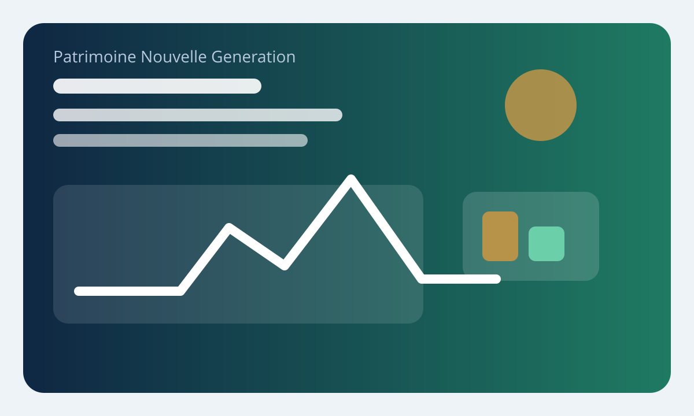

Mis a jour en avril 2026
Succession et donation : optimiser la transmission de son patrimoine

La transmission du patrimoine reste l'un des sujets les plus charges emotionnellement. Pourtant, c'est aussi l'un des domaines ou l'anticipation produit le plus de valeur concrete. Entre donation, demembrement, abattements et organisation du couple, de nombreux leviers existent pour eviter que l'improvisation ne fragilise a la fois la famille et le patrimoine.
Service-Public rappelle qu'en matiere de succession et de donation, les droits, abattements et regles varient selon le lien de parente. C'est fondamental. La transmission ne se pense pas seulement en montant, mais en architecture familiale et juridique.
L'objectif ne consiste pas a contourner la loi, mais a utiliser pleinement les options qu'elle prevoit. Bien transmettre, c'est reduire les frottements fiscaux quand c'est possible, tout en gardant une logique de paix familiale et de lisibilite.
Premiere idee cle : transmettre de son vivant change tout
La donation permet d'organiser une partie de la transmission avant le deces. C'est souvent preferable a une succession entierement subie, car vous gardez la main sur le calendrier, les beneficiaires, les proportions et parfois les modalites d'usage des biens. Cela permet aussi de mobiliser des abattements renouvelables selon les regles en vigueur.
Pour les enfants, Service-Public rappelle l'existence d'un abattement de 100 000 euros par parent dans certains cadres successoraux. Cette reference seule montre a quel point la temporalite compte. Une transmission bien echelonnée peut fortement lisser la charge fiscale sur la duree.
Donation simple, donation partage, don manuel : que choisir
La donation simple peut convenir pour transmettre un bien ou une somme a un moment donne. La donation-partage est souvent plus structurante lorsqu'il faut organiser l'equite entre plusieurs enfants et limiter les contestations futures. Le don manuel, lui, peut etre utile pour des transferts de liquidites, a condition de respecter les declarations requises.
Le bon choix depend de la composition du patrimoine, de l'age des enfants, de la presence d'une entreprise, d'un immobilier familial ou de situations conjugales particulières. Plus la famille est complexe, plus l'anticipation juridique devient precieuse.
Le demembrement : un outil central
Le couple usufruit / nue-propriete est un levier puissant. Il permet de transmettre progressivement la substance d'un bien tout en conservant certains droits d'usage ou de revenus. Dans une logique patrimoniale, c'est souvent une facon elegante d'avancer la transmission sans se dessaisir brutalement.
Mais il faut le manier avec precision. Valeur fiscale, objectifs concrets, impact sur les revenus, gouvernance familiale : tout doit etre clarifie en amont. Le demembrement n'est pas un gadget notarial. C'est une vraie technique patrimoniale.
Le conjoint survivant et la donation au dernier vivant
Service-Public rappelle que les droits du conjoint varient selon la presence d'enfants communs ou non, et qu'une donation au dernier vivant peut elargir ses options. Pour les couples maries, c'est souvent une brique essentielle de protection. Elle peut donner plus de souplesse au conjoint survivant, notamment entre usufruit et pleine propriete selon les cas.
Encore faut-il articuler cela avec les objectifs des enfants, la reserve hereditaire et la nature des biens. Une protection du conjoint mal pensee peut devenir une source de tension ou de blocage. Une protection bien redigee apaise au contraire beaucoup de situations.
| Levier | Utilite | Quand y penser |
|---|---|---|
| Donation simple | Transmettre un bien ou du cash | Quand l'objectif est ponctuel |
| Donation-partage | Organiser l'equite familiale | En presence de plusieurs enfants |
| Demembrement | Transmettre sans tout abandonner | Quand on veut garder l'usage ou les revenus |
| Donation au dernier vivant | Proteger le conjoint | Dans une reflexion de couple globale |
Les erreurs qui coutent cher
Ne rien faire, penser qu'un testament suffira a tout regler, oublier la reserve hereditaire, ignorer les familles recomposées, transmettre des liquidites sans preuve ou sans declaration adaptee, et surtout laisser un patrimoine important sans vision d'ensemble. La transmission n'aime pas le flou. Chaque zone d'ombre devient un risque juridique, fiscal ou relationnel.
Autre erreur frequente : tout regarder sous l'angle de la fiscalite. Oui, les droits comptent. Mais l'utilite concrete des biens, la capacite des heritiers a les gerer, le besoin de protection du conjoint ou la paix familiale comptent tout autant.
Ma recommandation pratique
Commencez par un audit patrimonial simple : qui doit etre protege, quels biens posent question, quel niveau de liquidite est disponible, quels abattements pouvez-vous mobiliser, et quelle gouvernance souhaitez-vous apres vous. Ensuite seulement, choisissez les outils avec votre notaire et, le cas echeant, votre conseiller patrimonial. Une transmission reussie est rarement spectaculaire. Elle est surtout anticipee, lisible et coherent avec votre histoire familiale.
Transmettre, c'est aussi transmettre de la clarte
Un patrimoine mal documente est plus difficile a transmettre qu'un patrimoine simplement moins important mais bien organisÈ. Inventaire des comptes, clauses beneficiaires, titres de propriete, organisation des donations deja effectuees, documents notaries et explication de la logique familiale : cette clarte reduit enormement les tensions futures. Elle fait partie de l'optimisation, au meme titre que les abattements.
Beaucoup de conflits successoraux naissent moins d'un probleme fiscal que d'un probleme d'incomprehension. C'est pourquoi la pedagogie familiale, lorsqu'elle est possible, vaut souvent autant qu'un montage technique brillant.
Quand faut-il enclencher la discussion familiale
Il n'existe pas d'age magique, mais attendre l'urgence est presque toujours une mauvaise idee. Une transmission pensee quand tout le monde va bien permet d'expliquer les intentions, de clarifier les outils retenus et de reduire les malentendus. Cette dimension humaine vaut souvent autant que les arbitrages fiscaux eux-memes.
Plan d'action patrimonial
Pour transformer cet article en decision utile, prenez trente minutes et posez trois choses sur papier : votre objectif exact, votre horizon de temps et le niveau de risque ou de complexite que vous acceptez vraiment. Cette petite formalisation change tout. Elle permet de filtrer les solutions seulement seduisantes et de privilegier celles que vous serez capable de tenir dans la duree. En patrimoine, la bonne idee n'est pas celle qui brille le plus. C'est celle que vous executez proprement pendant des annees.
Ensuite, rattachez toujours la decision a votre bilan global : tresorerie, projets de vie, endettement, fiscalite et charge mentale. Cette discipline d'ensemble est ce qui separe un bon conseil isole d'une vraie strategie patrimoniale.
Dernier point de vigilance
La meilleure decision patrimoniale est souvent celle qui reste comprehensible six mois plus tard. Si vous devez relire dix fichiers ou reconstituer votre logique pour vous rappeler pourquoi vous avez agi, c'est probablement que le montage est trop complexe pour son benefice reel. La simplicite defendable reste un avantage competitif immense pour l'investisseur particulier.
Questions frequentes
Peut-on desheriter ses enfants en France ?
Non dans le cadre francais classique, car la reserve hereditaire protege les descendants selon les regles applicables.
La donation au dernier vivant est-elle utile ?
Oui, tres souvent pour renforcer la protection du conjoint survivant, selon la situation familiale.
Faut-il attendre un grand patrimoine pour preparer sa transmission ?
Non. Plus on commence tot, plus on a de leviers et de souplesse.
Sources utiles
Avertissement
Ce contenu est fourni a titre informatif uniquement et ne constitue pas un conseil en investissement.
Commentaires
Section reservee a l'integration future d'un systeme de commentaires modere.